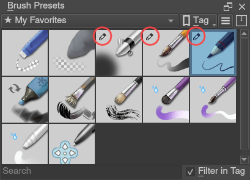

載入與儲存筆刷¶
In the real world, when painting or drawing, you don't just use one tool. You use pencils, erasers, paintbrushes, different types of paint, inks, crayons, etc. All these have different ways of making marks.
In a digital program like Krita you have something similar. We call this a brush engine. And much like how cars have different engines that give different feels when driving, or how pencils make distinctly different marks than roller ball pens, different brush engines have totally different feels.
The brush engines have a lot of different settings as well. So, you can save those settings into presets.
Unlike Photoshop, Krita makes a difference between brush-tips and brush-presets. Tips are only a stamp of sorts, while the preset uses a tip and many other settings to create the full brush.
筆刷設定彈出編輯器¶
To start, the Brush Settings Editor panel can be accessed in the toolbar, between the Choose brush preset button on the right and the Fill Patterns button on the left. Alternately, you can use the F5 key to open it.
When you open Brush Settings Editor panel you will see something like this:
筆刷設定編輯器一覧¶

The brush settings drop-down is divided into six areas,
Section A -- General Information¶
This contains the Preset Icon, Live Brush Preview, the Preset Name, the Engine name, and several buttons for saving, renaming, and reloading.
Krita's brush settings are stored into the metadata of a 200×200 PNG (the KPP file), where the image in the PNG file becomes the preset icon. This icon is used everywhere in Krita, and is useful for differentiating brushes in ways that the live preview cannot.
The live preview shows a stroke of the current brush as a little s-curve wiggle, with the pressure being non-existent on the left, and increasing to full pressure as it goes to the right. It can thus show the effect of the Pressure, Drawing Angle, Distance, Fade and Fuzzy Dab sensors, but none of the others. For some brush engines it cannot show anything. For the color smudge, filter brush and clone tool, it shows an alternating line pattern because these brush engines use the pixels already on canvas to change their effect.
After the preset name, there's a button for renaming the brush. This will save the brush as a new brush and deactivate the previous brush.
筆刷引擎¶
The engine of a brush is the underlying programming that generates the stroke from a brush. What that means is that different brush engines have different options and different results. You can see this as the difference between using crayons, pencils and inks, but because computers are math devices, most of our brush engines produce different things in a more mathematical way.
For most artists the mathematical nature doesn't matter as much as the different textures and marks each brush engine, and each brush engine has its own distinct flavor and use, and can be further customized by modifying the options.
重新載入¶
If you change a preset, an icon will appear behind the engine name. This is the Reload the brush preset button. You can use it to revert to the original brush settings.
儲存筆刷預設¶
On the right, there's Save New Brush Preset... and Overwrite Brush buttons.
- Save New Brush Preset...
Will take the current preset and all its changes and save it as a new preset. If no change was made, you will be making a copy of the current preset.
- Overwrite Brush
This will only enable if there are any changes. Pressing this will override the current preset with the new settings, keeping the name and the icon intact. It will always make a timestamped back up in the resources folder.
Save new preset will call up the following window, with a mini scratch pad, and all sorts of options to change the preset icon:

The image on the left is a mini scratch pad, you can draw on it with the current brush, allowing small modifications on the fly.
- Brush Name:
The Name of your brush. This is also used for the
KPPfile. If there's already a brush with that name, it will effectively overwrite it.- Load Existing Thumbnail
This will load the existing thumbnail inside the preset.
- Load Scratch Pad Thumbnail
This will load the dashed area from the big scratch pad (Section C) into the thumbnail area.
- Load Image
With this you can choose an image from disk to load as a thumbnail.
- Load from Icon Library
This opens up the icon library.
- Clear Thumbnail
This will make the mini scratch pad white.
預設圖示庫¶
To make making presets icons faster, Krita got an icon library.
It allows you to select tool icons, and an optional small emblem. When you press OK it will load the resulting combination into the mini scratch pad, and you can draw in the stroke.
If you go to your resources folder, there's a folder there called preset\_icons, and in this folder there are tool\_icons and emblem\_icons. You can add semi-transparent PNGs here and Krita will load those into the icon library as well, so you can customize your icons even more!
At the top right of the icon library, there are three sliders. They allow you to adjust the tool icon. The top two are the same Hue and Saturation as in HSL adjustment, and the lowest slider is a super simple levels filter. This is done this way because the levels filter allows maintaining the darkest shadows and brightest highlights on a tool icon, making it much better for quick adjustments.
If you're done with everything, you can press Save in the Save New Brush Preset dialog and Krita will save the new brush.
Section B -- The Preset Chooser¶
The preset chooser is much the same as the preset docker and the preset drop-down on the F6 key. It's unique in that it allows you to filter by engine and this is also where you can create brushes for an engine from scratch.
It is by default collapsed, so you will need to press the arrow at the top left of the brush engine to show it.
The top drop-down is set to “all” by default, which means it shows all engines. It then shows a tag section where you can select the tags, the preset list and the search bar.
Underneath that there's a plus icon, which when pressed gives you the full list of Krita's engines. Selecting an engine from the list will show the brushes for that engine.
The trashcan icon does the same as it does in the preset docker: delete, or rather, deactivate a preset, so it won't show up in the list.
Section C -- The Scratch pad¶
When you tweak your brushes, you want to be able to check what each setting does. That's why, to the right of the settings drop-down, there is a scratch pad.
It is by default collapsed, so you will have to press the arrow at the top right of the brush settings to show it.
When saving a new preset, you can choose to get the icon from the scratch pad, this will load the dash area into the mini scratch pad of the Save New Brush Preset dialog.
The scratch pad has five buttons underneath it. These are in order for:
Fill area with brush preset icon
Fill area with current image
Fill area with gradient (useful for smudge brushes)
Fill area with background color
Reset area to white
Section D -- The Options List¶
The options, as stated above, are different per brush engine. These represent the different parameters, toggles and knobs that you can turn to make a brush preset unique. For a couple of options, the main things to change are sliders and checkboxes, but for a lot of them, they use curves instead.
Some options can be toggled, as noted by the little checkboxes next to them, but others, like flow and opacity are so fundamental to how the brush works, that they are always on.
The little padlock icon next to the options is for locking the brush. This has its own page.
Section E -- Option Configuration Widget¶
Where section D is the list of options, section E is the widget where you can change things.
Using sensor curves¶
One of the big important things that make art unique to the artist who created it is the style of the strokes. Strokes are different because they differ in speed, rotation, direction, and the amount of pressure put onto the stylus. Because these are so important, we would want to customize how these values are understood in detail. The best way to do this is to use curves.
Curves show up with the size widget for example. With an inking brush, we want to have size mapped to pressure. Just toggling the size option in the option list will do that.
However, different people have different wrists and thus will press differently on their stylus. Someone who presses softly tends to find it easy to make thin strokes, but very difficult to make thick strokes. Conversely, someone who presses hard on their stylus naturally will have a hard time making thin strokes, but easily makes thick ones.
Such a situation can be improved by using the curves to map pressure to output thinner lines or thicker ones.
The brush settings curves even have quick curve buttons for these at the top. Someone who has a hard time making small strokes should try the second to last concave button, while someone who has a hard time making thick strokes should try the third button, the S shape.
Underneath the curve widget there are two more options:
- Share curve across all settings
This is for the list of sensors. Toggling this will make all the sensors use the same curve. Unchecked, all checked sensors will have separate curves.
- Curves calculation mode:
This indicates how the multiple values of the sensor curves are used. The curves always go from 0 to 1.0, so if one curve outputs 0.5 and the other 0.7, then...
- Multiply
Will multiply the two values, 0.5*0.7 = 0.35.
- Addition
Will add the two to a maximum of 1.0, so 0.5+0.7 = 1.2, which is then capped at 1.0.
- Maximum
Will compare the two and pick the largest. So in the case of 0.5 and 0.7, the result is 0.7.
- Minimum
Will compare the two and pick the smallest. So in the case of 0.5 and 0.7, the result is 0.5.
- Difference
Will subtract the smallest value from the largest, so 0.7-0.5 = 0.2.
It's maybe better to see with the following example:

The first two are regular, the rest with different multiplication types.
Is a brush with size set to the distance sensor.
Is a brush with the size set to the fade sensor.
The size is calculated from the fade and distance sensors multiplied.
The size is calculated from the fade and distance sensors added to each other. Notice how thick it is.
The size takes the maximum value from the values of the fade and distance sensors.
The size takes the minimum value from the values of the fade and distance sensors.
The size is calculated by having the largest of the values subtracted with the smallest of the values.
Section F -- Miscellaneous options¶
- Eraser switch size
This switches the brush to a separately stored size when using the E key.
- Eraser switch opacity
Same as above, but then with Eraser opacity.
- Temporarily save tweaks to preset
This enables dirty presets. Dirty presets store the tweaks you make as long as this session of Krita is active. After that, they revert to default. Dirtied presets can be recognized by the icon in the top-left of the preset.
The icon in the top left of the first two presets indicate it is “Dirty”, meaning there are tweaks made to the preset.¶
- Instant preview
This allows you to toggle instant preview on the brush. The Instant Preview has a super-secret feature: when you press the instant preview label, and then right click it, it will show a threshold slider. This slider determines at what brush size instant preview is activated for the brush. This is useful because small brushes can be slower with instant preview, so the threshold ensures it only activates when necessary.
浮動畫具板上的筆刷分量設定¶
There is a 畫布上的筆刷分量設定. If you open up the pop-up palette, there should be an icon on the bottom-right. Press that to show the on-canvas brush settings. You will see several sliders here, to quickly make small changes.
At the top it shows the currently active preset. Next to that is a settings button, click that to get a list of settings that can be shown and organized for the given brush engine. You can use the up and down arrows to order their position, and then left and right arrows to add or remove from the list. You can also drag and drop.
製作筆刷預設¶
Now, let's make a simple brush to test the waters with:
筆刷引擎的起始設定¶
First, open the settings with the F5 key.
Then, press the arrow on the upper left to open the preset chooser. There, press the “+” icon to get a list of engines. For this brush we're going to make a pixel brush.
例子：製作一個上墨用的筆刷¶
Draw on the scratch pad to see what the current brush looks like. If done correctly, you should have a 5px wide brush that has pressure set to opacity.
Let us turn off the opacity first. Click on the opacity option in the right-hand list. The settings should now be changed to a big curve. This is the sensor curve.
Uncheck the Enable Pen Settings checkbox.
Test on the scratch pad... there still seems to be something affecting opacity. This is due to the flow option.
Select the Flow option from the list on the right hand. Flow is like Opacity, except that Flow is per dab, and opacity is per stroke.
Uncheck the Enable Pen Settings checkbox here as well. Test again.
Now you should be getting somewhere towards an inking brush. It is still too small however, and kinda grainy looking. Click Brush Tip in the brush engine options.
Here, the diameter is the size of the brush-tip. You can touch the slider change the size, or right-click it and type in a value. Set it to 25 and test again. It should be much better.
Now to make the brush feel a bit softer, turn down the fade parameter to about 0.9. This'll give the brush mask a softer edge.
If you test again, you'll notice the fade doesn't seem to have much effect. This has to do with the spacing of the dabs: The closer they are together, the harder the line is. By default, this is 0.1, which is a bit low. If you set it to 10 and test, you'll see what kind of effect spacing has. The Auto checkbox changes the way the spacing is calculated, and Auto Spacing with a value of 0.8 is the best value for inking brushes. Don't forget that you can use right-click to type in a value.
Now, when you test, the fade seems to have a normal effect... except on the really small sizes, which look jagged. To get rid of that, check the anti-aliasing check box. If you test again, the lines should be much nicer now.
儲存新筆刷¶
When you're satisfied, go to the upper left and select Save New Brush Preset... button.
You will get the save preset dialog. Name the brush something like “My Preset”. Then, select Load from Icon Library to get the icon library. Choose a nice tool icon and press OK.
The icon will be loaded into the mini scratch pad on the left. Now doodle a nice stroke next to it. If you feel you messed up, just go back to the icon library to load a new icon.
Finally, press Save, and your brush should be done.
You can further modify your inking brush by...
- Changing the amount of pressure you need to put on a brush to make it full size.
To do this, select the size option, and press the pressure sensor from the list next to the curve. The curve should look like a straight line. Now if you want a brush that gets big with little pressure, tick on the curve to make a point, and drag the point to the upper-left. The more the point is to the upper-left, the more extreme the effect. If you want instead a brush that you have to press really hard on to get to full size, drag the dot to the lower-right. Such a brush is useful for fine details. Don't forget to save the changes to your brush when done.
- Making the fine lines look even softer by using the flow option.
To do this, select the flow option, and turn back on the Enable Pen Settings check box. Now if you test this, it is indeed a bit softer, but maybe a bit too much. Click on the curve to make a dot, and drag that dot to the top-left, half-way the horizontal of the first square of the grid. Now, if you test, the thin lines are much softer, but the hard your press, the harder the brush becomes.
與他人分享筆刷¶
Okay, so you've made a new brush and want to share it. There are several ways to share a brush preset.
The recommended way to share brushes and presets is by using the Resource Bundle system. We have detailed instructions on how to use them on the resource management page.
However, there are various old-fashioned ways of sharing brushes that can be useful when importing and loading very old packs:
分享單一筆刷預設¶
There are three types of resources a single preset can take:
A
paintoppresetfile: This is the preset proper, with the icon and the curves stored inside.A Brush file: This is the brush tip. When using masked brushes, there are two of these.
A Pattern file: this is when you are using textures.
So when you have a brush that uses unique predefined tips for either brush tip or masked brush, or unique textures you will need to share those resources as well with the other person.
To find those resources, go to .
There, the preset file will be inside paintoppresets, the brush tips inside brushes and the texture inside patterns.
匯入單一筆刷 KPP 檔案：¶
Now, if you want to use the single preset, you should go to the preset chooser on the F6 key and press the folder icon there. This will give a file dialog. Navigate to the KPP file and open it to import it.
If there are brush tips and patterns coming with the file, do the same with pattern via the pattern docker, and for the brush-tip go to the settings drop-down (F5) and then go to the brush-tip option. There, select predefined brush, and then the import button to call up the file dialog.
You can also use the import button in .
以 ZIP 壓縮檔分享（舊式做法）¶
Sharing via ZIP should be replaced with resource bundles, but older brush packs are stored in ZIP files.
使用 ZIP 壓縮檔中的檔案：¶
Go to to open the resource folder.
Then, open up the ZIP file.
Copy the
brushes,paintoppresetsandpatternsfolders from the ZIP file to the resource folder. You should get a prompt to merge the folders, agree to this.Restart Krita.
Enjoy your brushes!